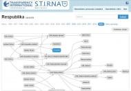

code for
freedom
on facebook
Mission/Vision/Goals
Code for Freedom is an international Hackathon organised to promote the ideals of freedom, solidarity and democracy. Technology and activism go hand in hand, and together can ameliorate many aspects of our everyday struggles for a better world. Empowering human rights, responding to humanitarian disasters, increasing transparency and accountability of governments, supporting civic engagement of citizens and many more topics can be addressed at this hackathone.
We offer 4.000 $ as an investment for best projects. We want this hackathon to be a place for exchange of experience, discussions and planning too, so everyone intrested in the topic of technology and democracy is welcome to join. You can propose your own project or come to help others.
Our Hackathon is organized in the cradle of the Polish Solidarity movement, Gdańsk, where more than 30 years ago, workers at the Gdańsk Shipyard made a collective effort to stand against the undemocratic government of the People’s Republic of Poland, effectively starting a domino effect which brought about the end of communism in Eastern and Central Europe by 1989. We believe that by combining the forces of activists and hackers in a place which oozes with the history of a successful peaceful transformation will bring about a great amount of ideas on technological tools, which will help people all over the world in their fight for freedom, solidarity and democracy. Join us and register now.
Register
Whether you are an activist, project manager, coder, graphic designer or a curious citizen, for sure you can give your contribution during this event and enjoy it! The fee is 15 zł (4 USD) and we offer a free T-shirt, 2 lunches and drinks for all participants. Joins us and lets make something useful.
register now →Project proposes
#20to21 – Free Society Meter
BASIC RECORD
map for the homeless
Nimby.pl

Stirna – who owns media?

VoteMapper
Mapping election data in time and space
Parliamentary Monitoring for Transparency Advocacy

Digital anti-corruption platform
CIVIC DATA MINING
IQMEL application for the skin protection
Tribunal
Bosnian Election Data Portal
Transparent Kraków
epodrecznik.edu.pl
Add Your Project
→
Mentors
Jury
Anna Sienicka

Anna Sienicka, Director of Fundacja TechSoup, is responsible for coordinating both strategic direction and the day-to-day operations of the European hub for TechSoup Global. Both locally and across the region, Anna’s team works to deepen and strengthen ongoing TechSoup programs while building, testing and scaling new initiatives which show particular promise in leveraging IT&C for civil society. Anna joined TechSoup Global from The Foundation for Social and Economic Initiatives, an NGO focused on building a more inclusive labor market through civil society and social enterprise development. Anna was responsible for the programmatic design and management of projects and programs in Poland and the Ukraine while leading related cross-sector and cross-border initiatives. Anna has also held a position of the head of the legal group of the Council for Public Benefit Work and was a member on the Polish Prime Minister’s Social Economy Task Force where she was deeply involved in civil society-related policy work. Anna holds degrees in Law and a M.A. in Economy and Society from Warsaw and Lancaster Universities.
Andrzej Gulczyński
Longtime project coordinator for the Lech Wałęsa Institute’s projects such as international conferences and social campaigns. Responsible for publication printing, television spot production, web page production, and coordination of the Poland-wide educational campaign Gene of Freedom.
Denis Gursky
Founder of SocialBoost – a set of innovative instruments incl. Open Data movement in Ukraine, that improves civic engagement and makes government more digitalized — thus accountable, transparent and open. Digital Communications and Civic Engagement Expert. Denis works on complex strategies for government and commercial sector. Leads an open government data movement in Ukraine highly supported by government and hacktivists, currently developing the Official Open Government Data Portal of Ukraine and Open Data Law.
Michał Mach
Co-founder and CEO for Infozmiana.pl, enterpreneur, trainer, consultant, project manager, software designer and just regular participant in many technology projects in nonprofit sector over last 18 years. Co-founder of CiviCRM project, an open source constituent relationship management (CRM) software for non-profits, president of Advisory Board in ePaństwo Foundation, founding member of Association 61, Second Hand Bank Association, Warsaw Hackerspace Association. Passionate about pragmatic approach to using Internet and IT in general for social good, fiercely believes in openness, transparency and knowledge sharing.